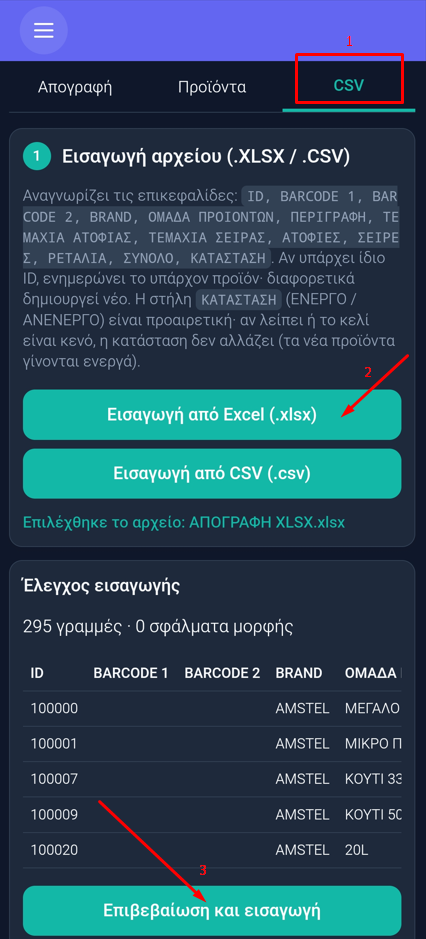
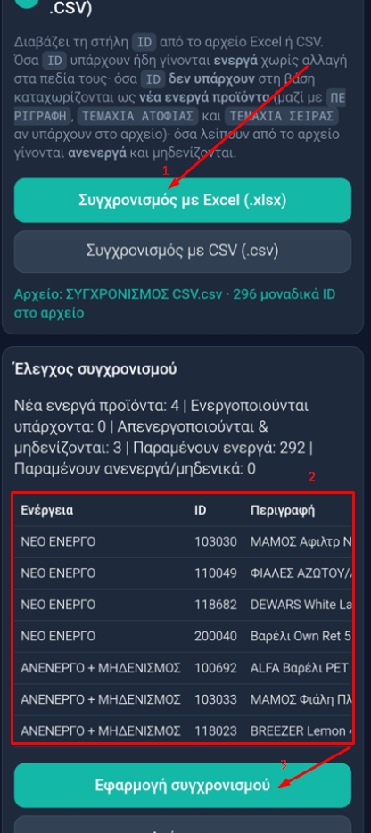
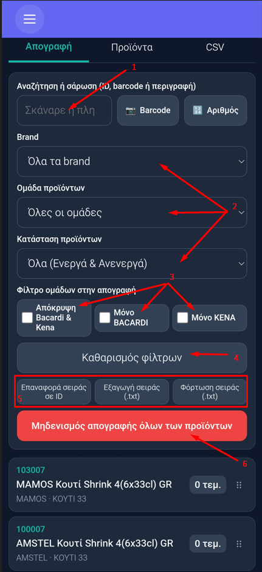
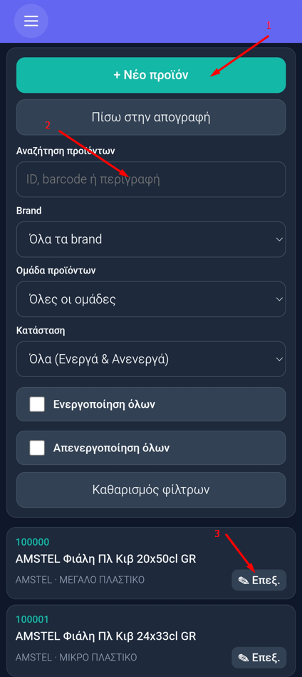
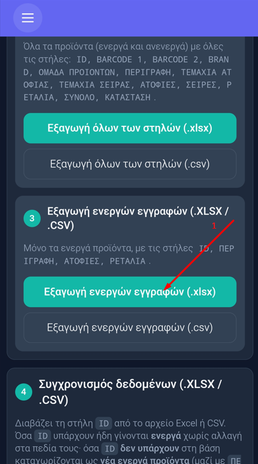

Οδηγίες εγκατάστασης σε Android:
1. Κατέβασε το αρχείο .apk.
2. Άνοιξέ το από τις ειδοποιήσεις ή τα «Ληφθέντα».
3. Αν ζητηθεί, επίτρεψε την «Εγκατάσταση άγνωστων εφαρμογών» από τον browser σου.
📖 Αναλυτικός Οδηγός Χρήσης & Screenshots

1. Εισαγωγή Αρχείου (.XLSX / .CSV)
1
Καρτέλα CSV / Εισαγωγή: Η κεντρική ενότητα που αναλαμβάνει την ανάγνωση και επεξεργασία εξωτερικών αρχείων δεδομένων.
2
Εισαγωγή από Excel (.xlsx): Κουμπί φόρτωσης αρχείου τύπου Excel, το οποίο αναγνωρίζει αυτόματα τις κεφαλίδες (ID, Barcode, Brand, Ομάδα, Περιγραφή κ.λπ.).
3
Επιβεβαίωση και εισαγωγή: Ολοκληρώνει οριστικά την εισαγωγή των δεδομένων στη βάση μετά τον επιτυχή έλεγχο μορφής.

2. Συγχρονισμός Δεδομένων
1
Συγχρονισμός με Excel (.xlsx): Λειτουργία σύγκρισης της υπάρχουσας βάσης με ένα νέο αρχείο για τον εντοπισμό αλλαγών.
2
Πίνακας ελέγχου (Προεπισκόπηση): Δείχνει αναλυτικά ποιες εγγραφές θα προστεθούν ως Νέα ενεργά, ποιες παραμένουν ενεργές και ποιες θα απενεργοποιηθούν και μηδενιστούν.
3
Εφαρμογή συγχρονισμού: Εκτελεί και αποθηκεύει επίσημα τις αλλαγές που προέκυψαν από τη διαδικασία συγχρονισμού.

3. Κύρια Απογραφή & Φίλτρα
1
Σάρωση / Αναζήτηση: Πεδίο ταχείας εισαγωγής ή σάρωσης (με χρήση κάμερας Barcode ή αριθμητικής πληκτρολόγησης).
2
Φίλτρα Brand, Ομάδων & Κατάστασης: Αναπτυσσόμενα μενού περιορισμού της λίστας ανάλογα με την εταιρεία, την κατηγορία ή την κατάσταση του προϊόντος.
Καθαρισμός φίλτρων: Επαναφέρει την προβολή στην αρχική πλήρη λίστα.
5
Διαχείριση σειράς (.txt): Εργαλεία επαναφοράς σειράς σε ID, εξαγωγής ή φόρτωσης της σειράς καταμετρήσεων.
6
Μηδενισμός απογραφής: Μαζική επαναφορά των μετρήσεων όλων των προϊόντων στο μηδέν.

4. Διαχείριση Προϊόντων
1
+ Νέο προϊόν: Δίνει τη δυνατότητα δημιουργίας και προσθήκης νέας καταχώρισης απευθείας στη βάση δεδομένων της εφαρμογής.
2
Πεδίο αναζήτησης: Επιτρέπει την άμεση ανεύρεση προϊόντων πληκτρολογώντας κριτήρια όπως ID, barcode ή περιγραφή.
3
Επεξεργασία (Επεξ.): Κουμπί δίπλα από κάθε προϊόν για την τροποποίηση των στοιχείων του.

5. Εξαγωγή Δεδομένων
1
Εξαγωγή ενεργών εγγραφών (.xlsx): Δημιουργεί και αποθηκεύει αρχείο Excel που περιέχει αποκλειστικά τα ενεργά προϊόντα και τα βασικά πεδία τους (ID, Περιγραφή, Ατόφιες, Ρετάλια). Διατίθεται επίσης εξαγωγή σε μορφή CSV ή εξαγωγή όλων των στηλών.